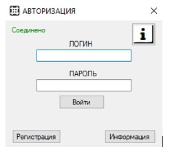
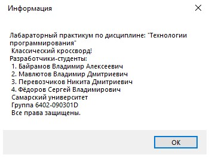

После запуска системы откроется окно авторизации, предназначенное для входа в систему.
В системе предусмотрена работа двух типов пользователей: администратор и пользователь.
Нажав на кнопку «Информация» пользователь увидит форму, в которой увидит сведения о системе и её авторах.

